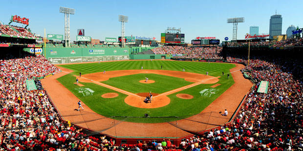
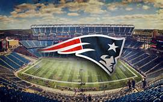

Boston's TD Garden
Since its opening in 1995, TD Garden has hosted over 200 events a year. As New England’s largest sports and entertainment arena, TD Garden is the home of the storied NHL’s Boston Bruins and NBA’s Boston Celtics franchises and hosts over 3.5 million people a year at its world-renowned concerts, sporting events, family shows, wrestling, and ice shows.
Fenway!
Fenway is a baseball park located in Boston, Massachusetts, at 4 Yawkey Way near Kenmore Square. Since 1912, it has been the location for the Boston Red Sox, the city's Major League Baseball (MLB) franchise. It is the oldest ballpark in Major League Baseball. History has been made at Fenway many times!
Information Here!Gillette Stadium
The facility opened in 2002, replacing the old Foxboro Stadium. The seating capacity is 68,756, including 6,000 club seats and 87 luxury suites. The stadium is owned and operated by Kraft Sports Group, a subsidiary of The Kraft Group, the company through which businessman Robert Kraft owns the Patriots and Revolution.
Information Here!| Places of Interest | Cost |
|---|---|
| Boston's TD Garden | $70.00 (average) |
| Fenway | $38.00 (average) |
| Gillette Stadium | $75 (average) |